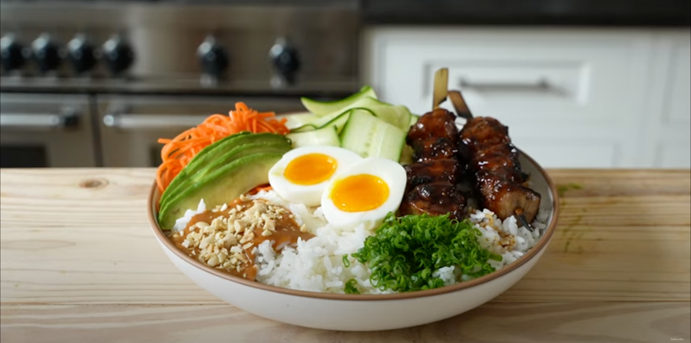

Rice Bowl

Description
I love this recipe becuase it combines so many flavors into one dish. Also, it doesn't hurt that it is cheap to make and good for you!
I owe most of this recipe from Joshua Weissman, so go check out his stuff here (link).
Ingredients
Rice
- 1 1/2 cups of short grain white rice -- or your favorite style of rice
Toppers
- 2 whole carrots
- 1/2 tablespoon sesame seed oil
- 2 limes
- 2 eggs
- 1 avocado
- 4 green onions
Tofu
- 8 oz of tofu
- tablespoon seasme seed oil
- 1/4 cup soy sauce
- 1/4 cup white distilled vinegar
- 1/4 cup honey
- 2 teaspoon cornstarch
- 2 teaspoon water
Peanut Sauce
- 3/4 cup of peanut butter
- 2.5 tablespoons of white distilled vinegar
- 3 tablespoons of granulated sugar
- 2 tablespoons of soy sauce
- 2 tablespoons of sriracha
- 1 clove garlic
- 1/4 cup water
- 1 teaspoon cornstarch
Steps
Rice
- Wash rice thoroughly.
- Place the rice into a rice cooker, and add the correct amount of water. Generally one cup of dry rice needs two cups of water.
- Turn on the rice cooker, and let it do it's magic.
Tofu
- In a small pot, add the soy sauce, white vinegar, and honey; place it on the stove over medium-high heat, bring it to a boil, and reduce for one minute.
- While that is cooking, in a separate bowl, combine cornstarch and water, and whisk until dissolved. Add 3/4 quarters of the slurry to the soy sauce mixture, stir in, and let boil for 30 seconds or until thickened. Remove the sauce from the heat. If the sauce is not thick enough, add more of the slurry.
- Cut your tofu into half inch cubes and place them on a plate with a papertowl on it to dry off the tofu.
- Grab a medium-sized skillet and place it on the stove over medium-high heat. Once hot, add some seasame oil to the pan and then add in the tofu, stirring occasionally so that all sides get cooked.
- Cook the tofu until it is done to your liking. I do not like crispy tofu, so I only keep it on the stove for about minutes, but you can do longer if you like your tofu to be crisy on the outside.
- Once cooked, add the tofu to the thickend sauce mixture and combine.
Peanut Sauce
- Place sugar, soy sauce, and white vinegar in a medium-sized pot. Stir and heat to dissolve. Allow the mixture to cool slightly, and then add the srirach, peanut butter, and garlic (grated).
- Whisk all together and reserve in the fridge.
Soft boiled eggs
- In a pot with boiling water slightly under medium-high heat, add eggs, boil for minutes and 30 seconds, immediately remove from the water, and place in an ice bath for about 5 minutes.
- Slightly crack the shell all over the egg, peel it off under a stream of water, and cut in half.
Carrots
- Julien your carrots. Add them into a bowl with salt, lime juice, sesame oil.
- Toss the mixture together until evenly coated.
Avocado
- Cut your avocado in half, remove the pit, and carefully cut and remove the skin.
- Slice the halfs into long, length-wise strips.
- Add salt and lime juice to the avocados.
Green onions
- These are pretty simple. Take each onion stalk, wash it, and then chop them up. Feel free to either use the white bulb or only the stems--up to how strong you want the taste to be.
Assembly
- In a bowl, add as much rice as you want, followed by one spoonful of your tofu.
- Next, gently place your carrots, two halfs of your soft boiled egg, and a handful of green onion.
- Grab a generous dollop of the peanut sauce, and place it in the bowl.
- Finally, add the sliced avocado and your bowl is complete! Yum :)